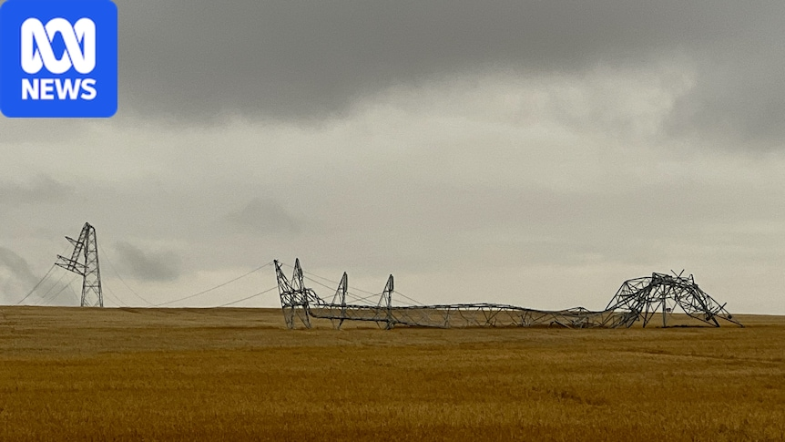
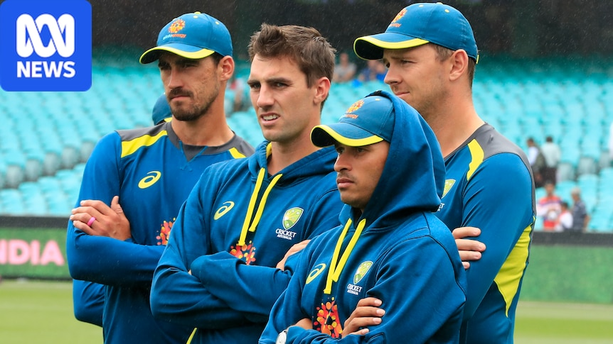

WANEYE RESEARCHAUSTRALIA EDITION
ASX MARKET BRIEF / 21 November 2026 · 22:10 AEST
Read the ASX
with context
Independent signal extraction from Australian reporting, market data and policy context.
28/ 100
MARKET PULSECautious
Composite sentiment across today’s source set.
01
THE BRIEF
What matters now
21 November 2026
22:10 AEST
Australian unemployment surged to a five-year high, sparking acute domestic recession concerns and fueling debate over excessive RBA tightening.
The national housing downturn deepened significantly, led by steep declines in Sydney property values approaching historic drawdown speeds.
Discretionary retail faces structural stress evidenced by 1,700 job cuts at David Jones, while the Australian dollar weakened sharply against major peers.
02
CROSS-SECTOR PULSE
An ASX cross-sector scan
Directional intelligence, distilled from the current reporting cycle.
01
Financials / Banking
Mounting mortgage affordability pressure from cumulative rate hikes coupled with rising credit risk and institutional conduct scrutiny.
4 cited sourcesOPEN SIGNAL ↗
02Consumer Discretionary & Retail
Severe consumer belt-tightening driving department store restructuring, extensive staff layoffs, and aggressive customer poaching.
3 cited sourcesOPEN SIGNAL ↗
03Materials & Mining
Small-cap gold and rare earth exploration outperformance contrasting with broader equity market liquidation and capital raising activity.
6 cited sourcesOPEN SIGNAL ↗
04Real Estate / REITs
Accelerating property downturn with Sydney dwelling values falling rapidly amid borrowing capacity constraints.
4 cited sourcesOPEN SIGNAL ↗
05Energy & Utilities
Persistent domestic gas market supply pressures and elevated pricing amid policy and reliability challenges.
4 cited sourcesOPEN SIGNAL ↗
06Healthcare & Consumer Staples
Adoption of weight-loss pharmaceuticals reshaping dietary habits alongside defensive pharmaceutical performance.
2 cited sourcesOPEN SIGNAL ↗
07Technology
AI-driven corporate workforce restructuring and hiring freezes balancing against private AI capital gains and speculative equity raises.
5 cited sourcesOPEN SIGNAL ↗
03
RISK REGISTER
Know the downside
Likelihood and impact are assessed independently from market sentiment.
Domestic Recession and Consumer Contraction
Underweight cyclical and discretionary equities; rebalance toward high-quality defensive dividend earners and sovereign bonds.
- Impact
- High
- Likelihood
- High
- Evidence
- 5 cited sources
Housing Market Acceleration Downward
Reduce exposure to residential developers and domestic banks with excessive residential mortgage concentration.
- Impact
- High
- Likelihood
- Medium
- Evidence
- 4 cited sources
AUD Depreciation and Imported Inflation
Maintain offshore revenue exposure via global exporters and hedged international asset allocations.
- Impact
- Medium
- Likelihood
- High
- Evidence
- 2 cited sources
Banking Sector Governance and Compliance Scrutiny
Favour financial institutions with clean regulatory audit trails and robust compliance provisioning.
- Impact
- Medium
- Likelihood
- Medium
- Evidence
- 1 cited sources
04
POSITIONING
Act on the signal
Overweight ASX Gold Producers and Advanced Project Developers
Gold assets serve as premier stagflation hedges and benefit directly from Australian dollar depreciation and eventual RBA policy easing.
NST.AXEVN.AXGOR.AX
Opportunitiesmedium-term
Accumulate Offshore-Earned Defensive Healthcare Leaders
Healthcare multinationals generate offshore USD earnings that insulate against local economic contraction and currency weakness.
CSL.AXCOH.AX
Opportunitieslong-term
Selective Exposure to Upstream Gas and Critical Mineral Producers
Tight domestic gas market conditions and technical breakthroughs in rare earths provide idiosyncratic upside detached from the macro cycle.
WDS.AXSTO.AX
Opportunitiesshort-term
Trim Exposure to Major Domestic Banking Franchises
Surging unemployment, eroded borrowing capacity, and falling house prices escalate credit impairment risks and curb loan volumes.
CBA.AXNAB.AXWBC.AXANZ.AX
Defensiveshort-term
Underweight Discretionary Retailers and Residential REITs
Major workforce downsizing at legacy retailers and plunging dwelling values signal protracted consumer spending weakness.
JBH.AXMYR.AXMGR.AXSGP.AX
Defensivemedium-term
Implement Downside Capital Protection via Cash and Index Hedging
Protect broad equity portfolios against further systemic liquidation following the $169 billion single-week index contraction.
^AXJOBBOZ.AX
Defensiveshort-term
05
FORWARD VIEW
The road ahead
1—3 MONTHS
Cautious and defensive across 1–3 months as the ASX 200 absorbs broad valuation repricing, labour market weakness, and persistent property market drag.
6—12 MONTHS
Constructive on a 6–12 month horizon as softening economic data forces the RBA to conclude its tightening cycle and lay groundwork for prospective rate cuts.
06
SOURCE INTELLIGENCE
Reporting behind the view
Selected Australian source headlines referenced by the analysis.

ABC News · 2026-11-21 12:04:52 UTC
Top End shaken as major quake hits East Timor
VIEW STORY ↗ABC News · 2026-11-21 10:00:34 UTC
World record-breaking Australian swimmer Jon Henricks dies aged 91
VIEW STORY ↗
ABC News · 2026-11-21 08:03:56 UTC
Lehmann denies knowledge of sandpaper plot despite Bancroft statement
VIEW STORY ↗
ABC News · 2026-11-21 07:45:38 UTC
Eyre Peninsula residents worried about further blackouts
VIEW STORY ↗
ABC News · 2026-11-21 06:46:52 UTC
Aussie bowlers no longer in control of public perception of legacies
VIEW STORY ↗ABC News · 2026-11-21 06:18:04 UTC
Victoria Point woman waited seven hours for ambulance before death
VIEW STORY ↗CURRENT RESEARCH
Three regions. Three connected views
Move from the executive brief through sector signals, risks, positioning and supporting reporting.
03Current regional reports
03Market editions
HourlyAnalysis cadence